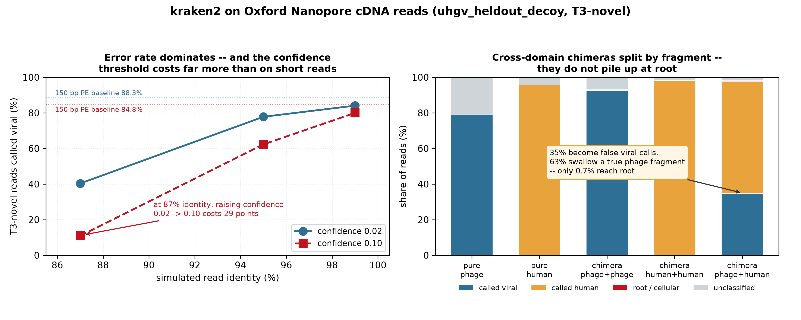
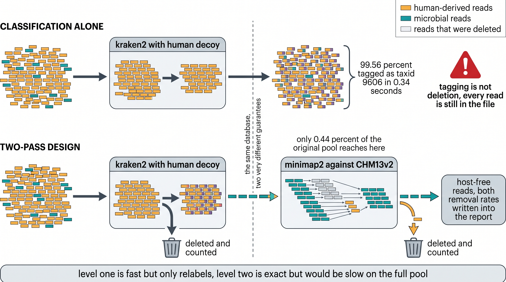
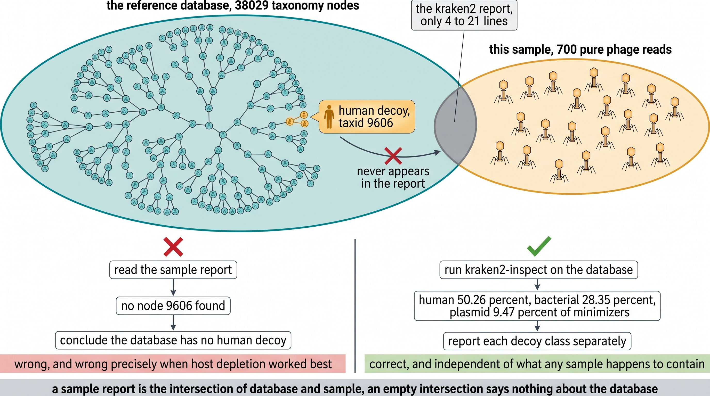
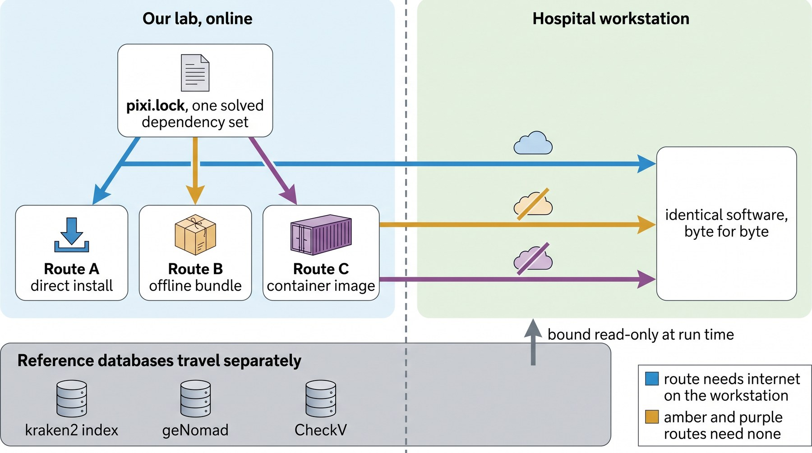

phamseek:把 benchmark 结论变成能交付的 pipeline ONT 临床宏基因组的 phage 检测 · 从场景修正到 v0.1 定案
一条以「场景假设被推翻」为转折点的推导链 —— 三个前提(平台、样本、参考库)在读完合作方材料后同时崩塌,后面所有参数与架构决策都是从那次修正长出来的。
§0 · 怎么用这页 🤖 给浏览器 AI 的导师提示 把下面这段贴给浏览器里的 AI,让它当这页的导师:「你是生信 pipeline 工程与临床交付方向的导师。请先通读本页全部内容,然后:(1) 用三句话复述 §1 推导链的主线,重点说清第 ③ 步为什么是整条链最贵的一步;(2) 针对 §2 中我指定的任一步,解释『为什么必须走到下一步』,并举一个反例说明如果不这么做会在部署当天出什么事;(3) §3 的两条原理请用具体数字讲,不要泛泛而谈;(4) 最后帮我把 §6 的项目连接扩展到我手上的具体数据集上,并指出我最可能踩的坑。全程中文,专业名词保留英文。」
⚠️ 注意 本页讲的是「怎么把一个 benchmark 结论变成能交付的东西」。 方法学本身(检出率、假阳性、能力边界怎么测出来的)在
p0126 的 learning hub ,两页互补:那边讲「结论怎么来」,这边讲「结论怎么落地」。
§1 · 推导链总图 一句话主线 :把一个 benchmark 结论变成能在别人机器上跑的东西,
最大的风险不是工程实现,而是你以为的场景不是真实场景 。这条链上最贵的一步是第三步 ——
读合作方自己的材料,发现平台、样本、参考库三个前提全都错了 。
后面所有参数与架构决策,都是从那次修正长出来的。
graph TD
A["起点: p0126 测出了 kraken2 检测 phage 的能力边界 💡 为什么 读图要点 实线 =前一步直接逼出下一步(有因果);虚线 =并列约束汇入同一个决策点 —— 比如 H(架构)是「库定了」和「参数定了」共同的下游,而 L(范围收敛)是 I/J/K 三条约束汇合的结果,不是任何单一一步推出来的。唯一分叉出两条边 的节点 —— 读一次材料同时推翻了平台假设(→④)与样本假设(→⑤);而工程决策(⑨⑩⑪⑫)全部排在场景修正之后 ,这不是巧合:在场景没确定前做的架构决策,大概率要重做 (第 ② 步就是代价)。
§2 · 推导链逐步详解 ① 起点:结论已经有了,但没人能用 p0126 测清楚了 kraken2 检测 phage 的能力边界 —— 参考库里有没有近邻决定一切、decoy 正交地解决质粒假阳性、contig 级数字都是上界。但这些结论住在一个 11 GB 的 benchmark 仓库里,
合作方无法直接使用 。要交付的不是数字,是一条能在他们机器上跑、且把这些边界条件写进报告的 pipeline。
② 按默认假设做了初始设计 —— 后来证明三条全错 在没读合作方材料前,默认假设是:Illumina paired-end、肠道/粪便样本、UHGV 同域库(因为 p0126 就是这么测的)。samplesheet 按双端写、QC 用 fastp、组装用 megahit、默认库指向 uhgv_heldout_decoy。这一步的价值在于它错得足够彻底,值得记下来 :benchmark 的测试条件不等于部署条件,把前者当后者是最容易犯、也最贵的错。
③ 读 retreat 材料:平台、样本、参考库三个前提同时崩了 合作方是 TUM Institute of Virology 的诊断实验室。他们的实际配置是:Oxford Nanopore (不是 Illumina)、血浆与脑脊液的 cell-free RNA (不是粪便)、而且已经在用 Kraken2 PlusPF (不是从零开始)。他们自陈的痛点是短 cDNA 片段 ligation 造成的 chimeric reads 。并行的 phage 增强层 —— PlusPF 的 viral 部分是 RefSeq viral,真核病毒够用但 phage 覆盖稀疏,那正是可以补的一维。
④ 平台修正:长读不是短读的加长版 samplesheet 从双端改单端(sample_id,fastq,platform,sample_type);QC 从 fastp 换成 chopper + nanoq;比对预设从 -ax sr 换成 -ax map-ont;组装器从 megahit 换成 flye(但 v0.1 不接线,见第 ⑫ 步)。.mmi 索引里存着建索引时的 -k/-w/-H,加载时这三个会覆盖命令行给的值 (minimap2 会打一条 WARNING,但很容易被刷过去)。其余比对参数仍按命令行生效。所以索引要用与比对同一 preset 建,否则你以为在跑 map-ont,minimizer 却是别的 preset 的。
⑤ 库选型翻转:「同域」里的『域』是随场景变的 UHGV 是人肠道 DNA virome 目录,对血浆/CSF 的 cell-free RNA 基本无用。INPHARED 覆盖临床病原菌(Staphylococcus / Pseudomonas / Klebsiella / E. coli )的培养 phage,才是这个场景要找的东西。默认库因此从 uhgv_heldout_decoy(11 G)改为 inphared_decoy(7.7 G)。库必须匹配目标生态位 ,而生态位换了,匹配方向就反过来。
⑥ 库大小买的是灵敏度,不是延迟 实测三个库(939 M / 3.9 G / 11 G):分类 100k read pairs 分别 0.298 / 0.316 / 0.339 秒 —— 库放大 11 倍只慢 14%;而峰值 RAM 是 1.2 / 4.1 / 10.8 GB,近似 1:1 (本机 DGX Spark aarch64 实测,warm page cache)。机制上 kraken2 的 k-mer 查询是均摊近 O(1) 的哈希查表,与库中条目数基本无关;实际延迟仍受缓存命中、内存带宽与一次性装库时间影响。「小库更快」几乎没有收益,而 RAM 是硬约束 。preflight.sh 因此把 RAM 做成硬门槛,且按你实际要用的那个库算 :给了 --db-dir 就用该库的真实体积 + 4 GB headroom 判 PASS/WARN/FAIL;没给才退回一个规划性基线(默认库 inphared_decoy 的 8 GiB),用来回答「这台机器大概装得下吗」。换 11 GB 的库,门槛自动跟着抬到约 15 GB。
⑦ ONT 先导:短读的调参直觉在这里不适用 把 confidence 从 0.02 提到 0.10,短读只掉 3.5 点,ONT 在 95% identity 下掉 15 点、87% 下掉
29 点 。机制是:kraken2 的 confidence 衡量的是
「支持所标 clade 的 k-mer 占该序列 k-mer 的比例」 ,而高错误率会打断大量 k-mer、直接压低这个比值。长读靠
更多 k-mer 提供的统计冗余 把损失补回来一部分,而收紧阈值恰恰把这部分冗余一起砍掉。
⇒
默认锁死 --confidence 0.02 ,并在 schema 的 help_text 里写清理由,免得后人以为是随手定的。实测见
results/ont_pilot/identity_sweep.tsv 。
⑧ 嵌合:危害是双向的,而且合并指标看不见 按 read 的真实来源分层后:跨 domain 嵌合 34.7% 被整条计为 viral (其中的 human 片段一起进了 viral 丰度)、63.0% 被计为 human (phage 片段静默丢失),只有 0.70% 到达 root 。⇒ 报告里的 chimera 诊断必须标注为非特异性辅助信号 ,不能让读者当成嵌合率读数;要真实嵌合率需要 split-mapping。
⑨ 架构:用户不需要知道底下是 Nextflow 依赖 SSOT 是
pixi.toml +
pixi.lock(双平台解析,部署时对方
pixi install 直接可用不必重新 solve);编排是 Nextflow DSL2,但对外只暴露
bin/phamseek 一条命令。
Nextflow 与 pixi 的接线用
beforeScript +
pixi shell-hook —— 不用 Nextflow 的
conda 指令(语义与 pixi 重叠、易误判),也不只把
bin/ 塞进 PATH(会漏掉
LD_LIBRARY_PATH 等 activation 变量)。
⑩ 两级 host depletion:分类不是删除 kraken2 的 human decoy 一遍就能标出 99.56% 的 human read(0.34 秒),但标记不等于删除 —— 没删的 read 仍会进 assembly、进中间文件、进报告。临床数据的合规底线是真删且可审计 。--l2_input 默认 all_nonhuman(viral read 也过 L2),堵住「human read 被误判为 viral 就绕过去宿主」这个洞 —— 实测只多约 5% 工作量。
⑪ db_has_decoy:问库里有什么,必须查库 报告需要知道参考库里有没有 decoy(有才能说质粒假阳性被压住了)。直觉做法是看样本的 kraken2 report 里有没有 taxid 9606 —— 这是错的,而且错得最隐蔽 :report 只列有 read 落上 的 taxon。实测含 human decoy 的库跑 700 条纯 phage read,report 里 9606 一条都没有 ;库自身 taxonomy 却有 38,029 个节点。恰好在 host depletion 最成功的样本上出错 。正解是 kraken2-inspect 查库自身,分 human / bacterial / plasmid 三类分别报;探测不到的报 unknown 并打 flag,不猜 。
⑫ 范围收敛:v0.1 只做 Tier 1 assembly + geNomad + CheckV 全部不做,--mode full 直接报错。三条理由:① ONT 要换 flye,是独立的一大块;② 目标场景 coverage 极低(合作方的 Coxiella 案例只有 0.3% genome coverage),大概率拼不出;③ 他们已验证的路径本来就是 kraken2 lead detection → mapping/BLAST 确证 ,不是组装。报错而不是留半成品 —— 一条跑通但结果不可信的路径,比一个明确的「未实现」危险得多。

第 ⑦⑧ 步的实测依据:左,错误率主导灵敏度,confidence 阈值的代价远大于短读;右,按 read 真实来源分层后,跨 domain 嵌合被分到两侧,到 root 的只有 0.70%。这两张图直接决定了 phamseek 的默认参数与报告措辞。 §3 · 两条核心原理 原理一:分类不是删除。 这条决定了 host depletion 必须做两级。

同一个含 human decoy 的库,两种用法给出的保证完全不同:只分类的话 99.56% 的 human read 被打上 taxid 9606 的标签,但它们还在文件里 ,会继续流向下游;两级设计则用这个标签驱动真正的删除,再让 minimap2 对剩下的约 0.44% 做精确兜底。两级的去除比例都写进报告。 为什么不能只做 L2(直接全量 minimap2)?因为那要对整个 read 池做比对,而临床样本里 human 占绝对多数 —— L1 把工作量降到 1/200 。为什么不能只做 L1?因为 0.44% 的残留 在一个 50M reads 的样本里仍是约 22 万条,而合规要求的是真删且可审计 。
⚠️ 注意 --l2_input 默认 all_nonhuman,连 viral read 也过 L2。这是刻意的 :否则一条被误判为 viral 的 human read 就绕过了去宿主。实测代价只有约 5%,而留一个合规旁路的代价无法估量。
原理二:问「参考库里有什么」必须查库本身。 这条决定了 db_has_decoy 的实现方式。

样本 report 是「库 ∩ 样本」的交集。含 human decoy 的库跑纯 phage 样本时,交集里根本不会出现 human 节点 —— 用交集反推全集,恰好在 host depletion 最成功的样本上给出相反的答案 。正解是用 kraken2-inspect 查库自身 taxonomy,三类 decoy 分别报。 这条原理的适用面远超本项目:凡是问「某个参考数据/模型里 有什么」,都必须查那个数据本身 。同类误用包括:用 profiler 输出反推数据库覆盖度、用比对结果反推索引内容、用命中列表反推 panel 设计。
§4 · 交付架构 
三档交付路线都从同一份 pixi.lock 派生,软件完全一致;参考数据库永远走另一条路,运行时只读挂载。决定走哪条路的只有两个问题:目标机能上网吗、有没有 container runtime。 🚚 三档交付 档 1 · pixi install 直装 —— 主推。pixi 是单个静态二进制,免 root,装进自包含目录,不碰对方既有的 conda。pixi.lock 已含 linux-64 完整解析,对方直接 install 不必重新 solve。档 2 · pixi-pack 离线自解压包 —— 无外网时用。⚠ 目标机必须有 ca-certificates,否则 pixi-unpack 在解第一个包之前 panic。档 3 · apptainer SIF —— 有 container runtime 时的最强隔离。⚠ %environment 覆盖不到 login shell,必须另写 /etc/profile.d/。
⚠️ 注意 数据库永远外置 ,由 --db_dir 指向宿主目录,进容器时 --bind 只读挂载。v0.1 只需要 kraken2/ 与 host/ 两个子目录;genomad_db/ 与 checkv/ 是 v0.2 预留,缺失时 preflight 只给 INFO 不给 WARN。
§5 · 关键决策 决策 为什么 怎么做的 不 merge 合作方的 PlusPF,改成并行跑两个库 两个已建好的 kraken2 binary 库不能直接拼(hash.k2d 无法合并);重建需要原始 FASTA,而 PlusPF 是预建索引没有。 并行跑、结果层合并 —— 不破坏他们现有流程。两个库共享 RefSeq 等来源、并不独立,所以这是结果互证 而非统计意义上的交叉验证。库加载是分钟量级,跑两遍完全可接受。 v0.1 不做 assembly 低生物量场景 coverage 太低,组装拼不出;且合作方已验证的路径不是组装。 --mode full 明确报错并解释原因,不留可跑但不可信的半成品。bracken 默认关闭 bracken 从「一个固定读长」的 k-mer 分布重估丰度,而 ONT 读长本质可变 —— 假设被构造性地违反。原默认值 150 是短读值,对 ONT 是错的。 skip_bracken=true;bracken_read_length 无默认值,开启时必须显式给,否则在 validateMode() 中止。kraken2 read count 与 RPM 不依赖 bracken,照常输出。--l2_input 默认 all_nonhuman 若只让「非 human 非 viral」的 read 过 L2,则一条被误判为 viral 的 human read 就绕过了去宿主 —— 临床数据不能留这种旁路。 viral read 也过 L2。实测代价只有约 5%(L2 负载本就由非 human 非 viral 的 read 主导)。
⚠️ 注意 共同的模式 :这四条都不是「哪个更好」的技术选择,而是「错了会怎样」的风险选择 。报错优于半成品、显式优于默认、合规优于省 5% 算力 —— 因为部署之后,错误的发现成本会高一个数量级。
§6 · ★ 连接到用户的项目 🔧 核心连接技术 核心连接技术:参考库外置 + 单命令封装。 phamseek 的 pipeline 本身与「phage」耦合很浅 —— 换一个 kraken2 库、换一个 host 索引,同一条流程就能服务另一个生态位。真正沉淀下来的是交付层 (preflight / 离线包 / 容器 / 数据库分卷校验),那一整层与生物学无关,可以整体搬走。
项目 相关度 通过哪个技术点连接 立刻能做什么 p0126-kraken2phage(方法学地基) ★★★ 直接派生 phamseek 的每个默认值都能追溯到那里的一个实测数字 改参数前先读 COLLAB-CLINICAL-PLAN.md 的边界条件 TUM Virology 诊断实验室(交付对象) ★★★ 进行中 FUO 队列 15→50 例,ONT + 血浆/CSF cell-free RNA 先 preflight 确认 RAM 能与 PlusPF 共存,再在 NTC 上验证污染背景模型 p0101 BTEX groundwater virome ★★ 非肠道生态位、无同域参考库 —— 换个库就能复用整条 pipeline换 --db_dir;但要预期 recall 落在 50% 量级,并读库盲区诊断 p0105 / p0106 大样本 virome(262 / ~280 样本) ★★ 大样本需要秒级筛查,而 kraken2 恰恰不是瓶颈 复用 Tier 1;注意给 kraken2 设 maxForks,并发会按库大小成倍吃 RAM pc028e3 Avian Virome Database ★★ 建库时的 decoy 化与 taxid 设计可直接照搬 参考 scripts/build_decoy_db.py 的 DECOYS 与 taxid 分配 任何要交付给外部机构的 pipeline ★★ 方法可迁移 三档交付 + 数据库外置 + preflight 的模式与 phage 无关 照搬 deploy/ 整层;INSTALL.md 是英文的,可直接给对方
📖 延伸学习 两个值得推进的方向 LoD 与 spike-in 矩阵 —— 诊断项目最关心的数字,本项目完全没碰。在阴性 plasma/CSF 背景里加已知 phage/病原体,交叉 abundance × 错误率 × 读长 × 嵌合比例,以高质量 mapping 为 truth 测检出限。连接点 :直接决定这条 pipeline 能否进临床流程,是投诊断类期刊(J Clin Microbiol / Clin Infect Dis )的必要材料。phage 作为污染判别的正交证据 —— 真实菌血症可能伴随该菌的 phage 信号,而试剂背景不易产生这种一致性。但这条判据两个方向都有反例 (菌株无 prophage / prophage 沉默 / 抗菌治疗后信号消失;反向则有游离 phage、肠道易位、试剂自带 phage 核酸),必须先在已知阳性与已知阴性上测敏感性与特异性 。连接点 :若成立,这是低生物量宏基因组学的一个通用工具,不限于 phage 领域。
§7 · 额外要补的知识 必修 · ONT 错误模型与 basecalling 版本 为什么学 :read identity 主导 kraken2 灵敏度,87% 与 99% 差一倍以上
从哪起步 :从 dorado 的 simplex/duplex 模型差异读起
必修 · 低生物量测序的污染控制(kitome / NTC) 为什么学 :血浆与 CSF 里试剂背景常常盖过真实信号
从哪起步 :Salter 2014 的 kitome 论文 + 你自己的 NTC 数据
必修 · pixi 与 conda 生态的关系 为什么学 :依赖 SSOT 是整个交付方案的地基
从哪起步 :pixi.toml / pixi.lock 的语义,以及 pixi-pack 的重定位机制
进阶 · Nextflow 的 stub 语义与其局限 为什么学 :-stub 不渲染 script 块,也会短路提前 return 的初始化逻辑 —— 全绿证明不了什么
从哪起步 :读本 repo 的 validateMode() 与 resolveDatabases() 的分工
进阶 · chimera 检测与 split-mapping 为什么学 :root 比例不是嵌合率代理,拿真实嵌合率只能靠 split-mapping
从哪起步 :从 minimap2 的 supplementary alignment 语义读起
进阶 · 容器与宿主环境的边界 为什么学 :%environment 覆盖不到 login shell,这类问题只在别人机器上暴露
从哪起步 :apptainer 的 env 注入顺序 + /etc/profile.d 的作用时机
应用 · 诊断项目的 LoD 与稀释系列设计 为什么学 :临床方最关心的数字,本项目尚未覆盖
从哪起步 :从 CLSI 的 LoD 指南 + spike-in 矩阵设计读起
应用 · 临床 NGS 的合规要求 为什么学 :host read 必须真删且可审计,不是技术选择而是底线
从哪起步 :GDPR 下人类遗传数据的处理要求
§8 · 知识库枢纽 ⚠️ 注意 红线 :v0.1 是 research-use-only,不得用于临床诊断 ;报告里每个阳性都是需要正交确证的 candidate;ONT 先导只支持条件结论,不能反推真实样本的绝对嵌合率 ,也没测 LoD;--confidence 与数据库包是耦合的 —— 改阈值会让已发出的库包在重新校验时 gate 4 失败。
§9 · 间隔重复卡片 交付一条 pipeline 给外部实验室,最大的风险是什么? 点击展开答案 ↗ 你以为的场景不是真实场景。 本项目在读合作方材料前,三个前提全错:平台以为是 Illumina(实际 ONT)、样本以为是粪便(实际血浆/CSF cell-free RNA)、参考库以为用 UHGV(实际该用 INPHARED)。动手前先读对方自己的材料 ,比任何架构讨论都值钱。kraken2 的 human decoy 已经能标出 99.56% 的 human read,为什么还要第二级 minimap2? 点击展开答案 ↗ 因为分类只改标签,不删序列 。被标记的 read 仍然在文件里,会进 assembly、进中间产物、进报告。临床数据的合规底线是真删且可审计 。 要知道一个 kraken2 库里有没有 human decoy,能不能看样本的 kraken2 report? 点击展开答案 ↗ 不能,而且错的方向最危险。 report 只列有 read 落上的 taxon。实测:含 human decoy 的库跑 700 条纯 phage read,report 里 taxid 9606 一条都没有;库自身 taxonomy 却有 38,029 个节点。恰好在 host depletion 最成功的样本上出错 。正解是 kraken2-inspect 查库自身。用交集反推全集,在交集为空时必然错 ,而交集为空往往正是系统工作良好的标志。ONT 上 --confidence 该怎么设?为什么不能沿用短读的经验? 点击展开答案 ↗ 锁 0.02,不要调高。 短读上 0.02→0.10 只掉 3.5 点,ONT 在 95% identity 下掉 15 点、87% 下掉 29 点。为什么 v0.1 宁可让 --mode full 报错,也不留一条能跑的组装路径? 点击展开答案 ↗ 因为一条跑通但结果不可信的路径,比一个明确的「未实现」危险得多 。Coxiella 案例只有 0.3% genome coverage),组装大概率拼不出东西;而用户看到有输出就会去解读它。明确报错 + 解释原因,让人知道该走哪条路(kraken2 lead → mapping/BLAST 确证)。 bracken 为什么默认关闭? 点击展开答案 ↗ 它从「一个固定读长」的 k-mer 分布重估丰度,而 ONT 读长本质可变 —— 假设被构造性地违反 。原来的默认值 150 是短读值,对 ONT 直接是错的。skip_bracken=true,bracken_read_length 无默认值:要开就必须显式给一个来自你自己 run 的中位读长,否则在 validateMode() 中止。kraken2 read count 与由它推出的 RPM 不依赖 bracken,照常输出。 离线安装一个 conda 环境,有哪两个「不联网也会炸」的点? 点击展开答案 ↗ ① pixi-unpack 没有系统 CA 信任库就 panicca-certificates 就在解第一个包之前死掉,而 Rust backtrace 完全不提证书。Nextflow 的 plugin 要预取 (nf-schema 等首次运行会联网下载),但 framework/capsule jar 不用 —— bioconda 的 nextflow 包自带。两者常被一起误当成要预取的。apptainer exec --net --network=none,并先跑 getent hosts github.com 确认解析失败 —— 否则「离线测试通过」可能只是它偷偷联网成功了。 容器里 apptainer exec img kraken2 能跑,但 bash -lc 'kraken2' 报 command not found,为什么? 点击展开答案 ↗ %environment 注入的是容器进程的初始环境 ,而 login shell 会 source /etc/profile,后者用 PATH=... 直接赋值 (不是追加),把容器前置的路径整个冲掉。%environment 外,还要在 %post 里写一个 /etc/profile.d/*.sh,用幂等的 case 判断避免重复前置。%test 块和日常 exec <cmd> 都走非 login shell,全绿;只有别人用了 bash -l 才炸,而那时人已经在对方机器上了。§10 · 术语表 Tier 1 / Tier 2 phamseek 的两级分析。Tier 1 是 read level(QC → kraken2 → 两级去宿主 → 报告),v0.1 只实现这一级;Tier 2 是 assembly → geNomad → CheckV,预留未实现。 两级 host depletion L1 用 kraken2 的分类结果删 human(秒级、99.56%),L2 用 minimap2 对剩余约 0.44% 做精确比对兜底。分类只改标签,删除必须是真的。 decoy 参考库里加入的三类非 phage 序列:human(CHM13v2)、bacterial(GTDB 肠道菌)、plasmid(mob_suite NCBI)。给 LCA 一个「正确的去处」——plasmid decoy 把质粒假阳性从 37.4% 压到 ≤0.4%,human decoy 让 L1 去宿主成为可能,三类各自独立探测、独立报告。 db_has_decoy auto 用 kraken2-inspect 读库自身 taxonomy 来判定 decoy 组成,分 human / bacterial / plasmid 三类分别报。绝不从样本 report 反推。 chimeric read 两段来源不同的序列在文库制备时被连成一条。ONT cDNA 文库里由短片段 ligation 或 Phi29 扩增前的 spacer 串联造成。 confidence kraken2 的判定阈值,语义是「匹配 k-mer 占比」。ONT 上高错误率本就压低这个比例,所以短读常用的 0.10 会砍掉大量真阳性。phamseek 锁 0.02。 pixi 依赖管理器,单个静态二进制,免 root,装进自包含目录,不碰既有 conda 安装。phamseek 的依赖 SSOT 是 pixi.toml + pixi.lock。 pixi-pack 把 pixi 环境打成离线自解压包。⚠ 目标机没有 ca-certificates 会直接 panic。 preflight 部署前的目标机体检:arch、glibc、RAM(对照将被整个载入内存的库)、磁盘、既有 conda 泄漏的环境变量、外网可达性、数据库完整性。 NTC (no-template control) 无模板对照。低生物量样本里区分真实信号与试剂背景的前提;phamseek 的 samplesheet 有 sample_type 列可标记它。 cell-free RNA (cfRNA) 血浆或脑脊液中游离的 RNA 片段。临床 NGS 用它做病原体检测,特点是极低微生物量、极高 human 背景。 库盲区诊断 报告里的一项指标:kraken2 未分类但落在 viral 特征上的比例。用来区分「真阴性」与「参考库不覆盖」—— 没有它,用户无从判断没检出意味着什么。